Exploratory Data Analysis in R
Ravin Poudel
Adapted from Data Science for R by Hadley Wichkam and Garrett Grolemund
Download slides here
In this section, we will be using a build-in dataset called “diamonds” to explore the tools and techniques that are useful for exploratory data analysis. we will be mostly using tidyverse packages.
# load the library
library(tidyverse)## ── Attaching packages ────────────────────────────────── tidyverse 1.2.1 ──## ✔ ggplot2 2.2.1 ✔ purrr 0.2.4
## ✔ tibble 1.4.2 ✔ dplyr 0.7.4
## ✔ tidyr 0.8.0 ✔ stringr 1.2.0
## ✔ readr 1.1.1 ✔ forcats 0.3.0## ── Conflicts ───────────────────────────────────── tidyverse_conflicts() ──
## ✖ dplyr::filter() masks stats::filter()
## ✖ dplyr::lag() masks stats::lag()# call for data
data("diamonds")
# display data structure
str(diamonds)## Classes 'tbl_df', 'tbl' and 'data.frame': 53940 obs. of 10 variables:
## $ carat : num 0.23 0.21 0.23 0.29 0.31 0.24 0.24 0.26 0.22 0.23 ...
## $ cut : Ord.factor w/ 5 levels "Fair"<"Good"<..: 5 4 2 4 2 3 3 3 1 3 ...
## $ color : Ord.factor w/ 7 levels "D"<"E"<"F"<"G"<..: 2 2 2 6 7 7 6 5 2 5 ...
## $ clarity: Ord.factor w/ 8 levels "I1"<"SI2"<"SI1"<..: 2 3 5 4 2 6 7 3 4 5 ...
## $ depth : num 61.5 59.8 56.9 62.4 63.3 62.8 62.3 61.9 65.1 59.4 ...
## $ table : num 55 61 65 58 58 57 57 55 61 61 ...
## $ price : int 326 326 327 334 335 336 336 337 337 338 ...
## $ x : num 3.95 3.89 4.05 4.2 4.34 3.94 3.95 4.07 3.87 4 ...
## $ y : num 3.98 3.84 4.07 4.23 4.35 3.96 3.98 4.11 3.78 4.05 ...
## $ z : num 2.43 2.31 2.31 2.63 2.75 2.48 2.47 2.53 2.49 2.39 ...# mapping the types of diamond cut, and their number
ggplot(data = diamonds) +
geom_bar(mapping = aes(x = cut))
Here the bar represents different categories of dimaond cuts. The height of the bars displays how many observations occurred with each x value.
# if you want a count table
diamonds %>%
count(cut)## # A tibble: 5 x 2
## cut n
## <ord> <int>
## 1 Fair 1610
## 2 Good 4906
## 3 Very Good 12082
## 4 Premium 13791
## 5 Ideal 21551Distribution plots are one of common visualization tools use for exploratory data analysis. Selection of exploratory tools is in part based on data types. Histograms are used for continuous variables, whereas barplots and box plots are common tools for categorical data.
# call for data structure and check the data type for diamond carat
str(diamonds)## Classes 'tbl_df', 'tbl' and 'data.frame': 53940 obs. of 10 variables:
## $ carat : num 0.23 0.21 0.23 0.29 0.31 0.24 0.24 0.26 0.22 0.23 ...
## $ cut : Ord.factor w/ 5 levels "Fair"<"Good"<..: 5 4 2 4 2 3 3 3 1 3 ...
## $ color : Ord.factor w/ 7 levels "D"<"E"<"F"<"G"<..: 2 2 2 6 7 7 6 5 2 5 ...
## $ clarity: Ord.factor w/ 8 levels "I1"<"SI2"<"SI1"<..: 2 3 5 4 2 6 7 3 4 5 ...
## $ depth : num 61.5 59.8 56.9 62.4 63.3 62.8 62.3 61.9 65.1 59.4 ...
## $ table : num 55 61 65 58 58 57 57 55 61 61 ...
## $ price : int 326 326 327 334 335 336 336 337 337 338 ...
## $ x : num 3.95 3.89 4.05 4.2 4.34 3.94 3.95 4.07 3.87 4 ...
## $ y : num 3.98 3.84 4.07 4.23 4.35 3.96 3.98 4.11 3.78 4.05 ...
## $ z : num 2.43 2.31 2.31 2.63 2.75 2.48 2.47 2.53 2.49 2.39 ...Carat is a numerical information about the diamond weight. Here carat is a continuous variable and it can take infinite set of values.
# maximum value for diamond carat
max(diamonds$carat)## [1] 5.01# minimum value for diamond carat
min(diamonds$carat)## [1] 0.2# distribution of carat values
ggplot(data = diamonds) +
geom_histogram(mapping = aes(x = carat), binwidth = 0.5)
Note: Binwidth determines size of the bin. If you increase the size for the bin, you will observe less number of bins in histogram.
# check the difference when the bin size is one
ggplot(data = diamonds) +
geom_histogram(mapping = aes(x = carat), binwidth = 1)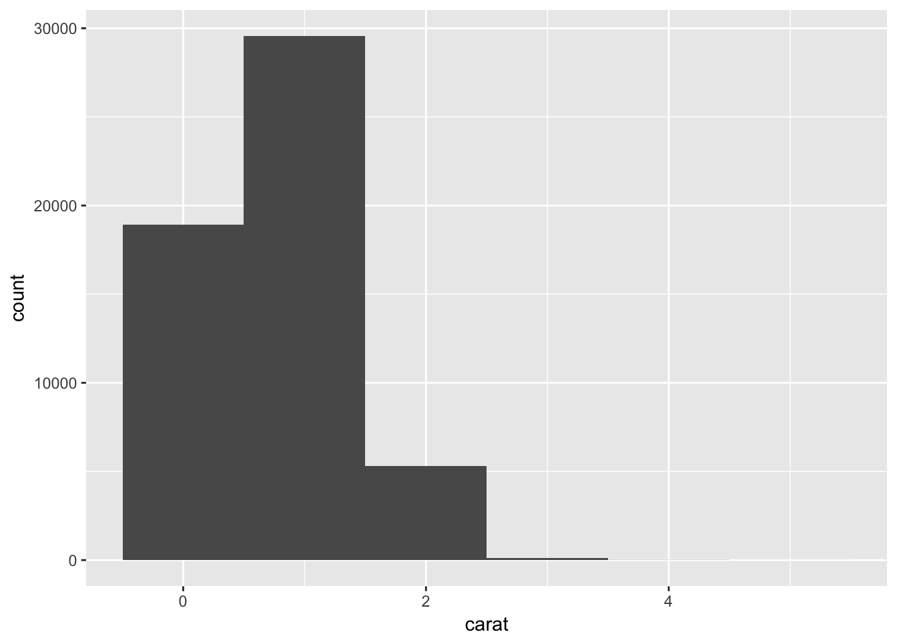
We can also use data subsetting skills to select the specific information.
# distribution of diamond with carat less than 3.
smaller <- diamonds %>%
filter(carat < 3)
# check the table
head(smaller)## # A tibble: 6 x 10
## carat cut color clarity depth table price x y z
## <dbl> <ord> <ord> <ord> <dbl> <dbl> <int> <dbl> <dbl> <dbl>
## 1 0.230 Ideal E SI2 61.5 55. 326 3.95 3.98 2.43
## 2 0.210 Premium E SI1 59.8 61. 326 3.89 3.84 2.31
## 3 0.230 Good E VS1 56.9 65. 327 4.05 4.07 2.31
## 4 0.290 Premium I VS2 62.4 58. 334 4.20 4.23 2.63
## 5 0.310 Good J SI2 63.3 58. 335 4.34 4.35 2.75
## 6 0.240 Very Good J VVS2 62.8 57. 336 3.94 3.96 2.48# check the x-axis and compare with the previous histogram.
ggplot(data = smaller, mapping = aes(x = carat)) +
geom_histogram(binwidth = 0.5)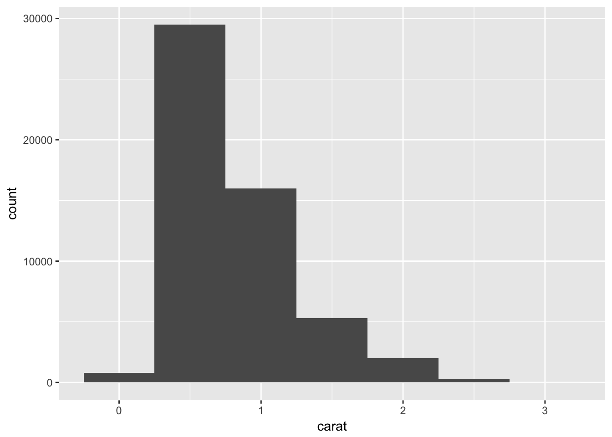
# adding color to the histogram
ggplot(data = smaller, mapping = aes(x = carat, fill = "red")) +
geom_histogram(binwidth = 0.5)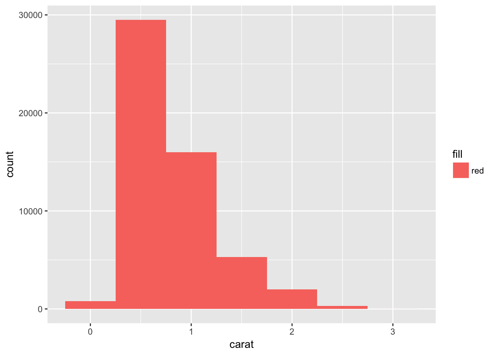
# adding informative color to the histogram
ggplot(data = smaller, mapping = aes(x = carat, fill = cut)) +
geom_histogram(binwidth = 0.5)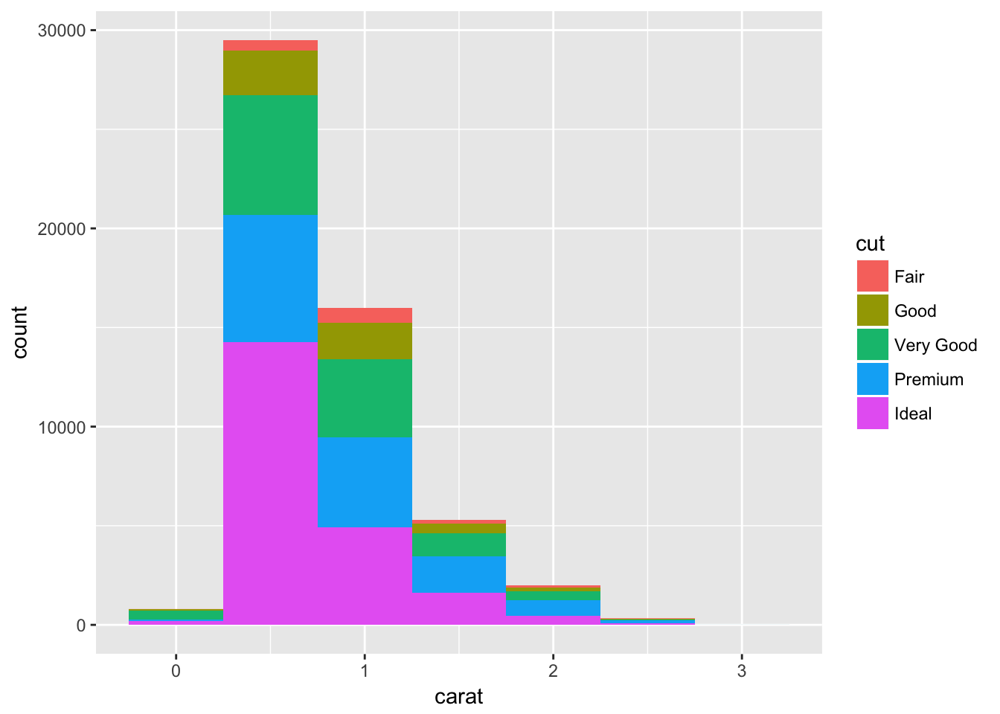
Instead of histogram if you want a line then you can use geom_freqpoly() function. Instead of bars, lines are used to display the counts.
ggplot(data = smaller, mapping = aes(x = carat, colour = cut)) +
geom_freqpoly(binwidth = 0.1)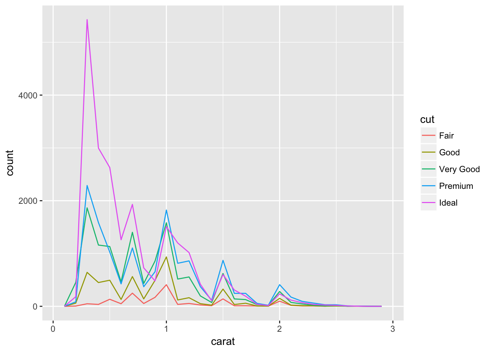
Histogram are good tool to explore continuous variable. However, it is not that intuitive to explore categorical data with histogram. For categorical data we use box plot.
ggplot(data = diamonds, mapping = aes(x = cut, y = price)) +
geom_boxplot()
# if you want to reorder based on the median value
ggplot(data = diamonds, mapping = aes(x = reorder(cut, price, FUN = median), y = price)) +
geom_boxplot()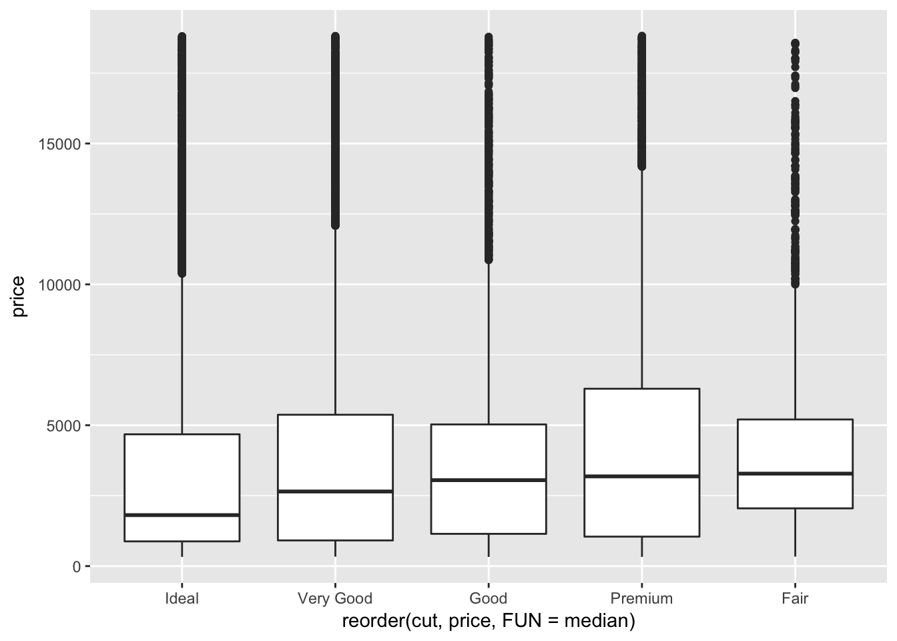
If you have long variable names, geom_boxplot() will work better if you flip it 90°. You can do that with coord_flip() function.
ggplot(data = diamonds, mapping = aes(x = reorder(cut, price, FUN = median), y = price)) +
geom_boxplot() +
coord_flip()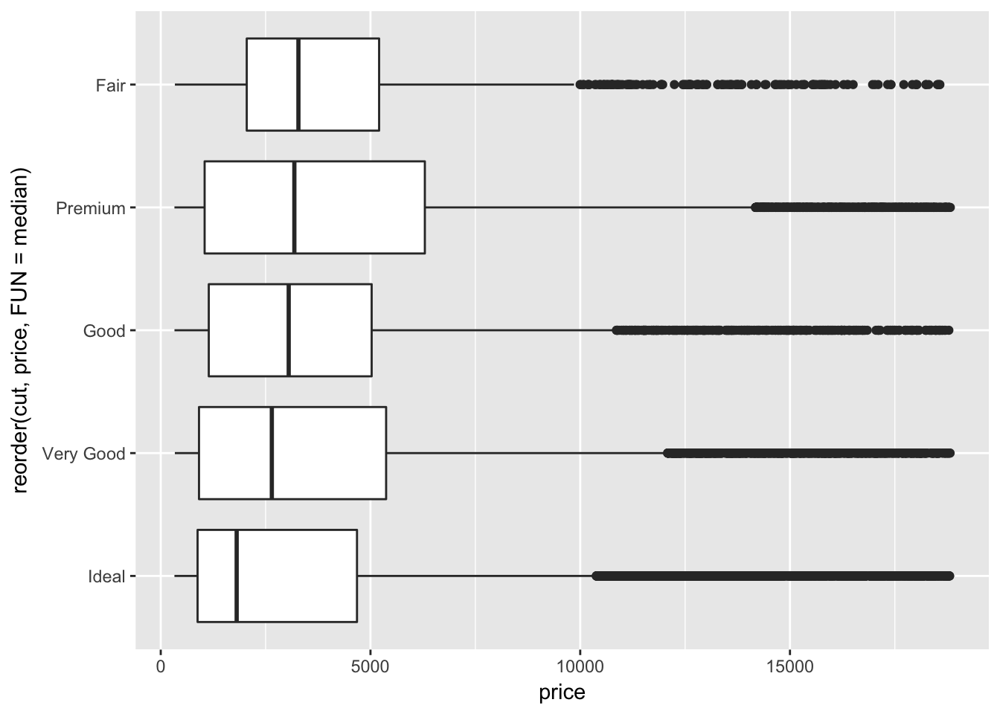
Two categorical variables
To visualize covariation between categorical variables, you will need to count the number of observations for each combination.
# display data as table
diamonds %>%
count(color, cut)## # A tibble: 35 x 3
## color cut n
## <ord> <ord> <int>
## 1 D Fair 163
## 2 D Good 662
## 3 D Very Good 1513
## 4 D Premium 1603
## 5 D Ideal 2834
## 6 E Fair 224
## 7 E Good 933
## 8 E Very Good 2400
## 9 E Premium 2337
## 10 E Ideal 3903
## # ... with 25 more rows# then plot with geom_tile() and the fill aesthetic:
diamonds %>%
count(color, cut) %>%
ggplot(mapping = aes(x = color, y = cut)) +
geom_tile(mapping = aes(fill = n))
Exploring two continuous variables.
ggplot(data = diamonds) +
geom_point(mapping = aes(x = carat, y = price))
ggplot(data = diamonds) +
geom_point(mapping = aes(x = carat, y = price), alpha = 1 / 10)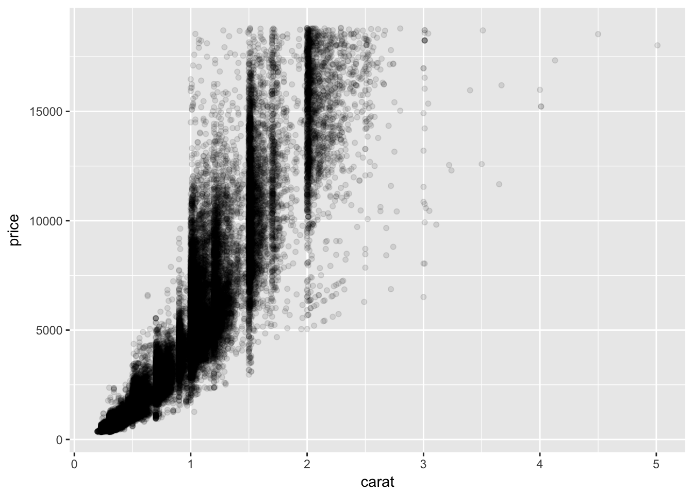
Question: Can you combine categorial information with continuous variable?
ggplot(data = diamonds) +
geom_point(mapping = aes(x = carat, y = price, colour =cut), alpha = 1)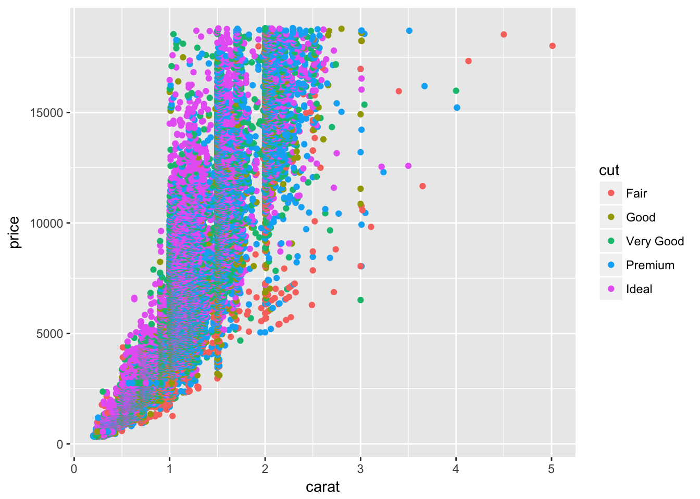
So far we have looked at the distribution using histograms and box plots. For two continuous variables, we can explore covariations between two variables and study their relationship.
Let’s look at one example with diamond dataset. It will be interesting to see if there is any relationship between the diamond price and the carat. Here we use lm function from base R to build a linear model, where diamond price is represented as response variable and carat as predictor.
mod <- lm(log(price) ~ log(carat), data = diamonds)
# summary table for linear model
summary(mod)##
## Call:
## lm(formula = log(price) ~ log(carat), data = diamonds)
##
## Residuals:
## Min 1Q Median 3Q Max
## -1.50833 -0.16951 -0.00591 0.16637 1.33793
##
## Coefficients:
## Estimate Std. Error t value Pr(>|t|)
## (Intercept) 8.448661 0.001365 6190.9 <2e-16 ***
## log(carat) 1.675817 0.001934 866.6 <2e-16 ***
## ---
## Signif. codes: 0 '***' 0.001 '**' 0.01 '*' 0.05 '.' 0.1 ' ' 1
##
## Residual standard error: 0.2627 on 53938 degrees of freedom
## Multiple R-squared: 0.933, Adjusted R-squared: 0.933
## F-statistic: 7.51e+05 on 1 and 53938 DF, p-value: < 2.2e-16par(mfrow=c(2,2)) # allows to visualize four plots in a single page
plot(mod)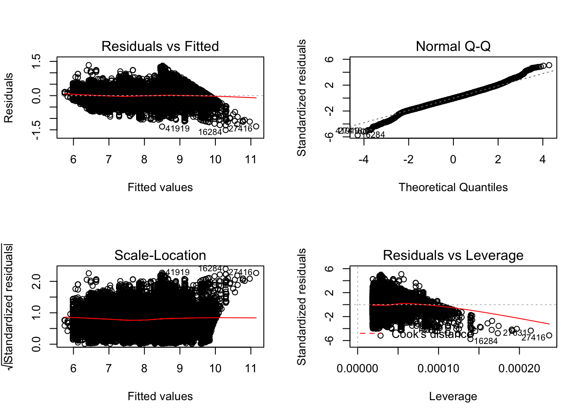
Challenge
Outliers are observations that are unusual; data points that don’t seem to fit the pattern. Use diamonds data set, and visualize such unusual data point. Hint: binwidth
ggplot(data = diamonds, mapping = aes(x = carat)) +
geom_histogram(binwidth = 0.01)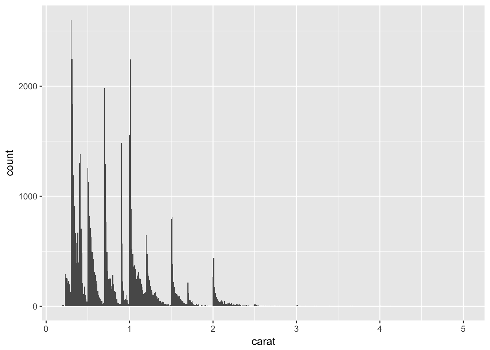